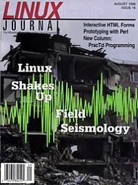

Shutdown Archive web server
Search:
Linux Journal
Issue #16/August 1995

Features
HTML Forms: Interacting with the Net
by Eric Kasten
How to create interactive HTML forms.
Linux Goes to Sea
by Randolph Bentson
Stephen Harris tells how he uses Linux for ship-to-shore communication.
Introduction to Lisp-Stat
by Balasubramanian Narasimhan
Efficient, User-Friendly Seismology
by Sid Hellman
News & Articles
Prototyping Algorithms in Perl
by Jim Shapiro
Putting Widgets in Their Place
by Stephen Uhler
The Trade Shows
by Randolph Bentson and Arnold Robbins
What's GNU?
GNU Coding Standards
by Arnold Robbins
Reviews
Book Review
SendMail
by Phil Hughes
Columns
Letters to the Editor
Stop the Presses
by Michael K. Johnson
Novice to Novice
: Interlude & Explorations: Spreadsheets & Text Editors
by Dean Oisboid
New Products
Kernel Korner
Memory Allocation
by Michael K. Johnson
Archive Index
Shutdown Archive web server
Search:
Copyright © 1994 - 2018
Linux Journal
. All rights reserved.